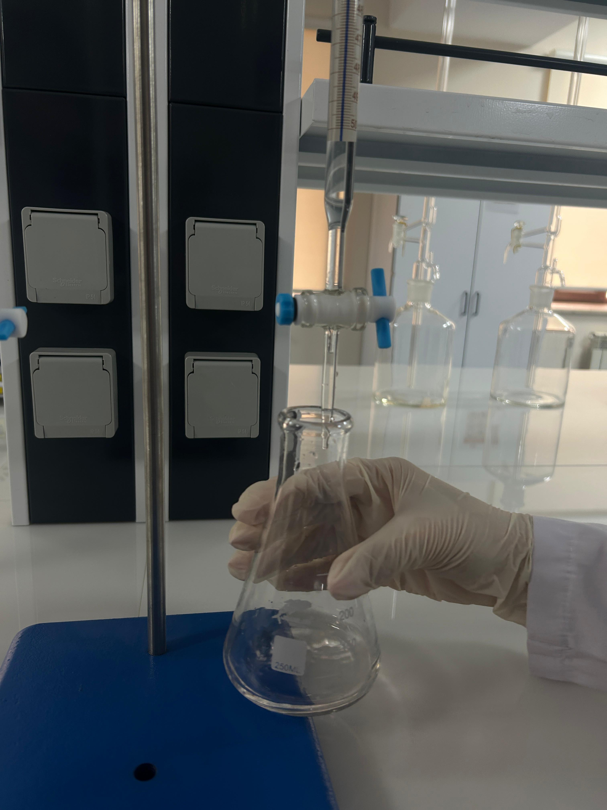
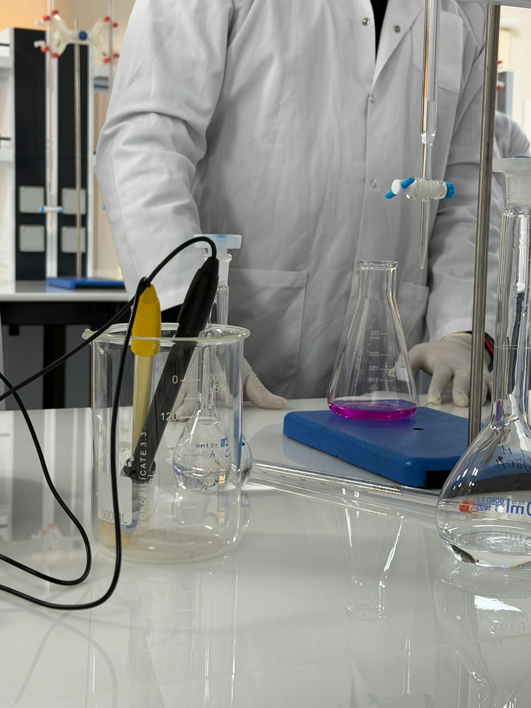

Titrasiya: Dəqiq Analiz Metodu
Titrasiya: Maddə Miqdarının Təyini Üçün Dəqiq Analiz Metodu Titrasiya (və ya titrləmə) – qatılığı məlum olmayan bir məhlulun (analit) qatılığını, qatılığı dəqiq bilinən başqa bir məhlulun (titrant) köməyi ilə təyin etmək üçün istifadə olunan kəmiyyət analizi metodudur. Kimya laboratoriyalarında ən çox istifadə edilən klassik metodlardan biridir.
Titrasiyanın Əsas Komponentləri
Şəkillərinizdə də gördüyümüz kimi, proses üçün aşağıdakı avadanlıq və maddələr zəruridir:Büret: Titrantın (qatılığı məlum olan məhlul) damla-damla əlavə edilməsi üçün istifadə olunan dərəcəli şüşə boru. (Şəkillərinizdə büretin göstəricisi təxminən 2.8 ml civarında görünür).Erlenmeyer kolbası: Reaksiyanın getdiyi qab.Titrant: Büretdəki məhlul (məsələn, $NaOH$).Analit: Erlenmeyer kolbasındakı qatılığı axtarılan məhlul (məsələn, $HCl$).İndikator: Reaksiyanın bitdiyini rəng dəyişimi ilə göstərən maddə. Sizin təcrübənizdə Fenolftalein istifadə olunub.


2. Proses Necə İşləyir?
Titrasiya zamanı titrant analitin üzərinə yavaş-yavaş əlavə edilir. Bu zaman iki mühüm nöqtə var:
Ekvivalentlik nöqtəsi: Əlavə olunan titrantın miqdarının analitlə tam kimyəvi reaksiyaya girdiyi (stexiometrik olaraq bərabərləşdiyi) nəzəri nöqtə. Son nöqtə: İndikatorun rənginin dəyişdiyi və təcrübənin dayandırıldığı an. Şəkillərinizdəki tünd çəhrayı rəng reaksiyanın son nöqtəyə çatdığını (və ya bir az keçdiyini) göstərir.
Mikrobioloji Təhlükəsizlik və Yekun
3. Hesablama FormuluTitrasiya nəticəsində məhlulun qatılığını hesablamaq üçün adətən aşağıdakı düsturdan istifadə olunur:$$M_1 \cdot V_1 = M_2 \cdot V_2$$Burada:$M_1$: Titrantın molyar qatılığı$V_1$: Büretdən sərf olunan həcm$M_2$: Analitin (naməlum) qatılığı$V_2$: Analitin ilkin həcmi
4. Titrasiyanın Tətbiq Sahələri Titrasiya yalnız dərsliklərdə deyil, sənayedə də geniş istifadə olunur: Qida sənayesi: Südün turşuluğunun və ya sirkədəki sirkə turşusunun təyini. Əczaçılıq: Dərman preparatlarının tərkibindəki aktiv maddələrin təmizliyinin yoxlanılması. Su analizi: Suyun sərtliyinin və ya tərkibindəki xlorun miqdarının ölçülməsi. Ətraf mühit: Çay və göllərin çirklənmə dərəcəsinin analizi.
Tədqiqatın Əsas Nəticələri
Aparılan bu tədqiqat, həm texniki icra (titrləmə dəqiqliyi), həm də innovativ yanaşma (təbii indikator tətbiqi) baxımından uğurla tamamlanmışdır. Müəyyən edilmişdir ki, laboratoriya şəraitində qida təhlükəsizliyi normalarına tam riayət etməklə yüksək dəqiqlikli analizlər aparmaq mümkündür.